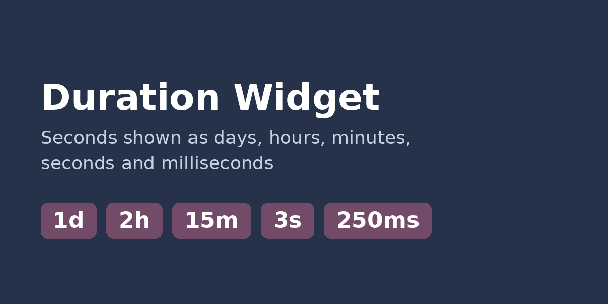
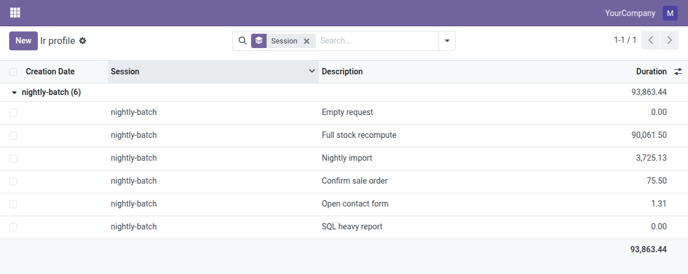
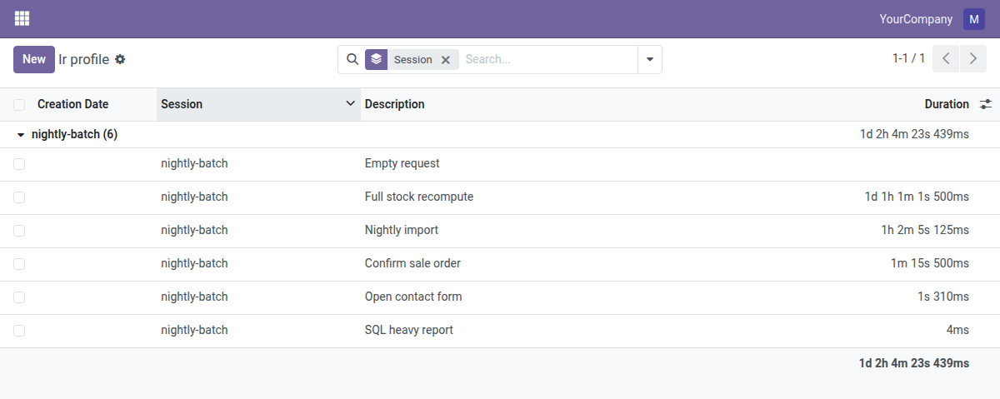
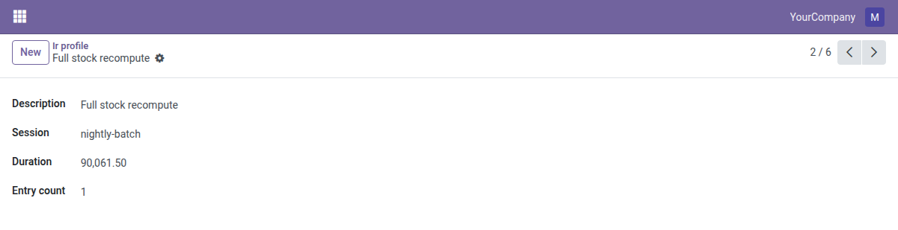
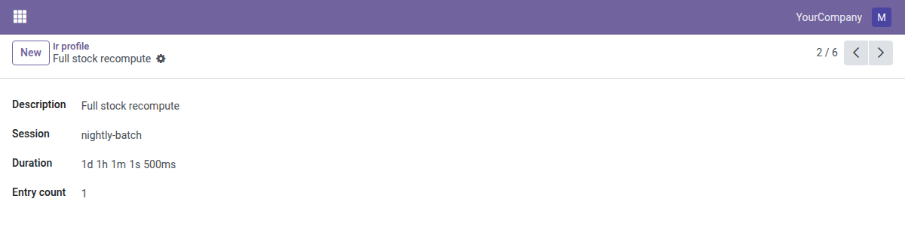

A field widget that shows a number of seconds as days, hours, minutes, seconds and milliseconds.

Set widget="human_duration" on a float or integer field holding seconds:
<field name="duration" widget="human_duration"/>
90061.5 is shown as 1d 1h 1m 1s 500ms, 1.31 as 1s 310ms. Zero units are skipped, an empty value shows nothing.
align: start, center or end to force the alignment.web only.Profiling sessions grouped by session, the duration column with a sum. Before: the plain float field, seconds with decimals.

After: widget="human_duration". Rows, the group row and the total are readable at a glance; an empty duration shows nothing instead of a zero.

Before: the plain float field.

After: the same field with the widget, lined up with the other fields of the form.
